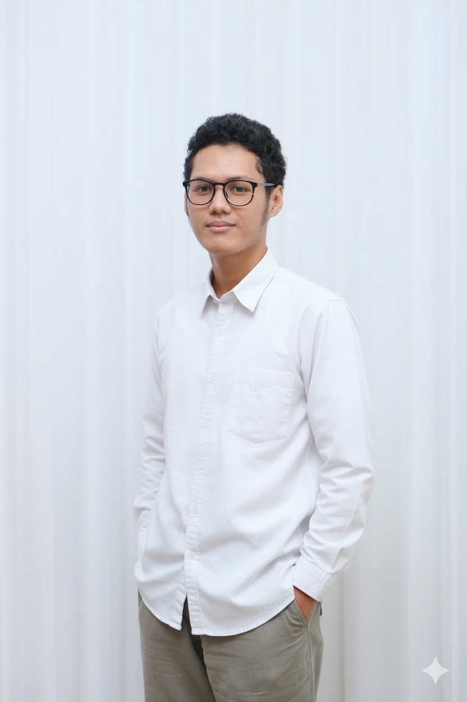
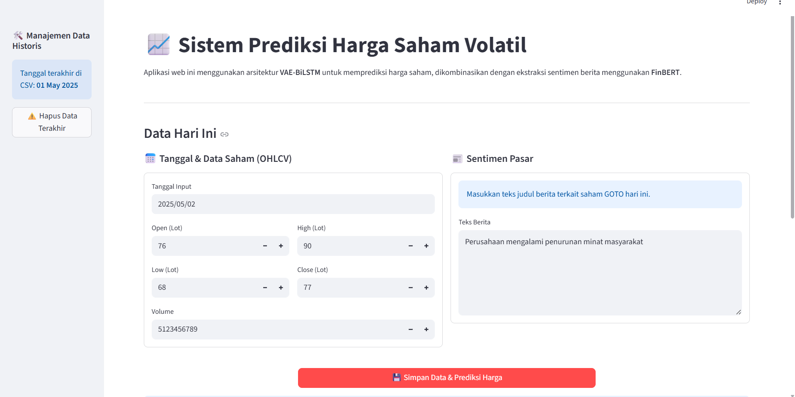
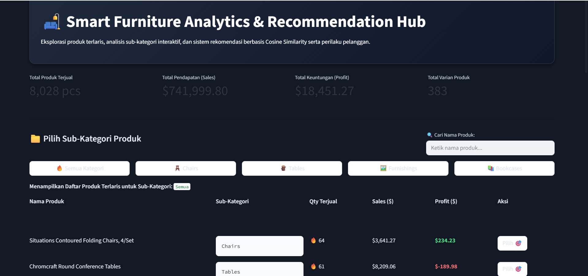
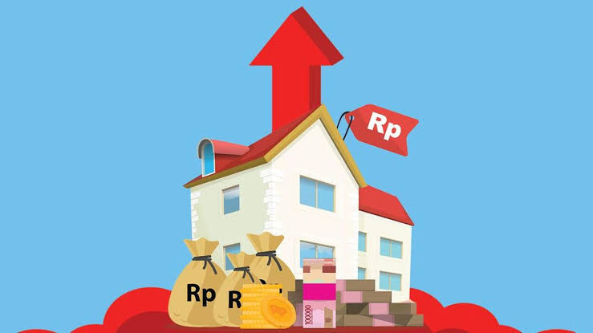
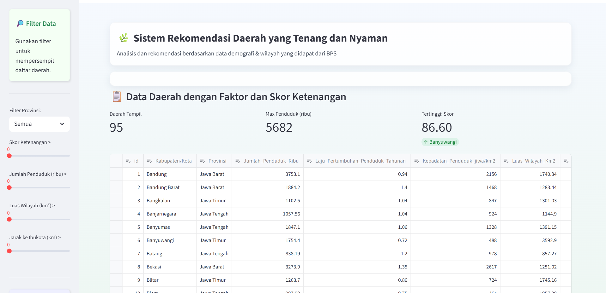

Hello, I am Kanang Herdaya Biwada
Data Scientist I Machine Learning & Artificial Intelligence Enthusiast
A Bachelor’s degree graduate in Informatics that is Ambitious to grow, adapt to the latest technological advancements, and contribute within the work environment.
Contact MeProjects

Stock Price Prediction System
A web-based system project capable of predicting the next-day (H+1) closing price of a stock, and displaying the results in the form of a graph.
See Project
Product Recommendation System
A web-based system project capable of Analyze company sales data to recommending products based on user behavior and preferences.
See Project
House Price Prediction
Predicting house prices with data taken by web scraping to produce the best house price recommendations in a property industry
See Project
Quiet Area Recommendation System
A web-based system project capable of presenting a "tranquility score" for each region and predicting the tranquility score of a given area based on the factors that influence it.
See ProjectSkills & Expertise
Web Development
Proficient in HTML, CSS, JavaScript, PHP and modern frameworks for building responsive websites.
Machine Learning
Experience using Python, Scikit-Learn, TensorFlow, and Pandas for model training and testing
Tools
Proficient in using Excel, SQL, Git, GitHub, Postman, and various productivity tools
Big Data
Experienced in using Python, Pandas, and SQL to analyze, process, and visualize complex datasets.
Certifications
Associate Data Scientist
A training program from BNSP that focused on data science
See CertificationsIntermediate Machine Learning
A learning program for solving problems using machine learning
See CertificationsCustomer Churn Prediction using Machine Learning
learning program for solving issues with implementing customer churn sector
See Certifications